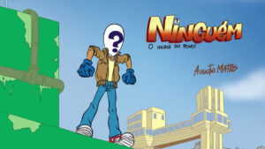
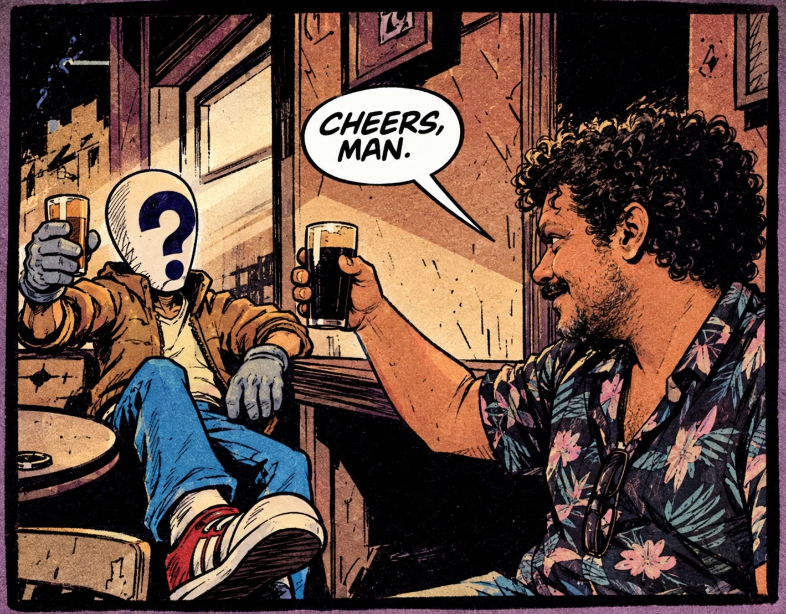

Nos quadrinhos
Salvador, Bahia · Universo original
O herói que
ninguém esperava.
De dia, gari. Quando a cidade chama, um defensor do povo. Conheça o herói baiano que nasceu nos quadrinhos e ganhou vida na animação.
Um personagem de Augusto Matos Pereira
01 / SALVADORBAHIA, BRASIL

Imagem enviada como referência · crédito e uso final a confirmar
O personagem
01 / 04O povo tem
um herói.
É ele mesmo.
Ninguém é um super-herói soteropolitano com os pés no chão — e o coração no lugar certo.
Na rotina, veste o uniforme de gari. Fora do expediente, encara o crime e os absurdos da cidade com coragem, humanidade e uma boa dose de humor. O herói que passa despercebido pode ser justamente aquele de que todo mundo precisa.
Esta apresentação resume referências públicas. A sinopse e a caracterização finais devem ser aprovadas pelo autor.
Da página para a tela01Feito na Bahia
02Nasceu nos quadrinhos
03Herói fora do expediente

Experimento visual criado pelo autor com ChatGPT: Ninguém encontra seu criador em um bar. Uma ideia metalinguística, com referência a Constantine e Alan Moore — não é cena canônica nem colaboração dos artistas citados.
Do papel à animação
A cidade é o cenário.
O povo, o motivo.
Ninguém nasceu como personagem de quadrinhos pelas mãos do desenhista e animador baiano Augusto Matos Pereira. A história chegou à tela em Ninguém: O Herói do Povo — A Origem, curta de animação realizado em Salvador em 2010.
Uma aventura com identidade própria, enraizada na vida cotidiana da cidade e feita para ser compartilhada.
Ninguém: A OrigemCurta de animação · Salvador, 2010
Ver página A página externa requer conexão. Confirmar disponibilidade do vídeo, direitos de exibição e créditos antes do lançamento oficial.
Memória em movimento
O universo continua.
Toda aventura
Arte de referência · crédito e uso final a confirmar.Na animação
Uma cidade
em movimento.
Curta, bastidores e créditos.Em Salvador
Histórias com
cara de daqui.
Um herói baiano, muitas perspectivas.O acervo visual será ampliado com materiais aprovados e creditados pelo criador.
Feito em Salvador